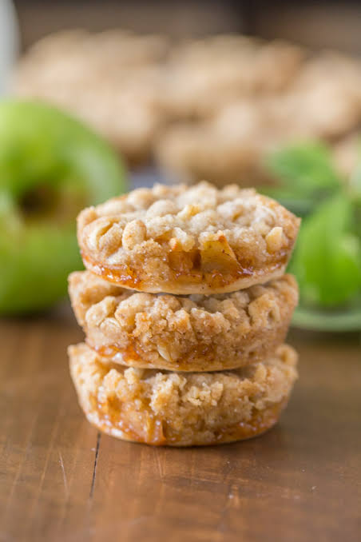

Home
Apple Pie Cookie

Description
Quick, easy, and tasty macaroni and cheese dish. Fancy, designer mac and cheese often costs forty or fifty dollars to prepare when you have so many expensive cheeses, but they aren't always the best tasting. This simple recipe is cheap and tasty.
Ingredients
- 1 cup butter
- 6 ounces cream cheese, softened
- 2 tablespoons vanilla extract
- 2 cups all-purpose flour
- 5 teaspoons white sugar
- 2 teaspoons baking powder
- 1 teaspoon ground cinnamon
- 1 (15.25 ounce) can apple pie filling, or as needed
- 2 tablespoons sugar, or to taste
- 1 teaspoon ground cinnamon, or to taste
Steps
- Preheat oven to 350 degrees F (175 degrees C). Line 2 baking sheets with parchment paper.
- To make the dough: Beat butter, cream cheese, and vanilla extract together in a large bowl until smooth. Add flour, 5 teaspoons sugar, baking powder, and 1 teaspoon cinnamon; mix until dough comes together.
- Roll dough into a 1/4-inch thick round on a floured work surface. Cut out 48 circles with a cookie cutter.
- Top 24 dough circles with a teaspoon of apple pie filling. Cover with remaining 24 dough circles. Crimp edges with a fork to seal. Arrange cookies on lined baking sheets.
- Bake in the preheated oven until cookies are golden brown, 23 to 29 minutes. Cool for 5 minutes.
- To make the topping: Mix 2 tablespoons sugar and 1 teaspoon cinnamon together in a shallow bowl. Roll warm cookies in sugar and cinnamon mixture until coated. Transfer to a wire rack to cool briefly.
- Serve hot and enjoy!